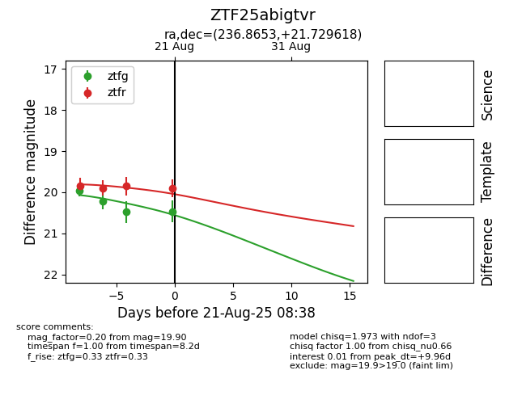

Target ZTF25abigtvr at 2025-08-21 08:38, see:
FINK: fink-portal.org/ZTF25abigtvr
Lasair: lasair-ztf.lsst.ac.uk/objects/ZTF25abigtvr
ALeRCE: alerce.online/object/ZTF25abigtvr
alt names
ZTF25abigtvr (ztf,alerce)
coordinates:
equatorial (ra, dec) = (236.8653,+21.72962)
galactic (l, b) = (35.1351,+49.77118)
photometry
last ztfg=20.47, ztfr=19.90
4 ztfg, 4 ztfr detections
